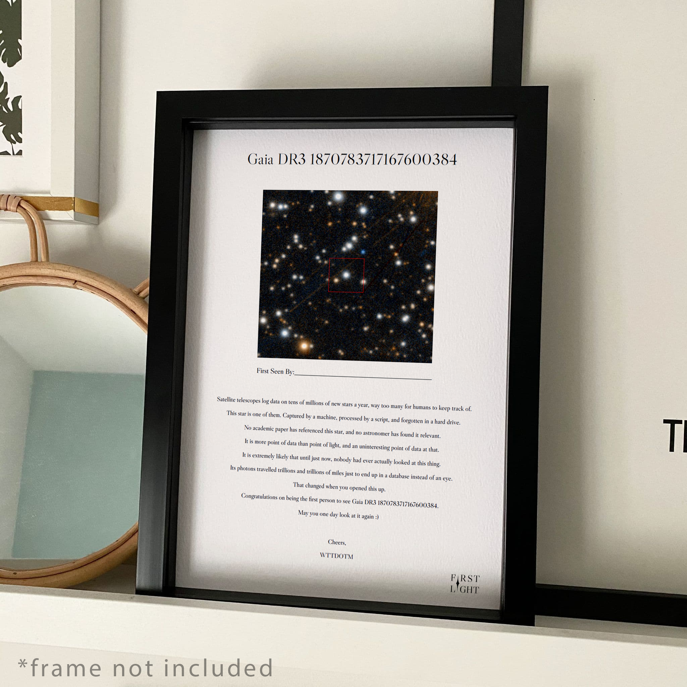
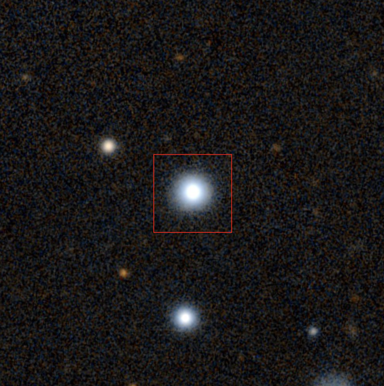
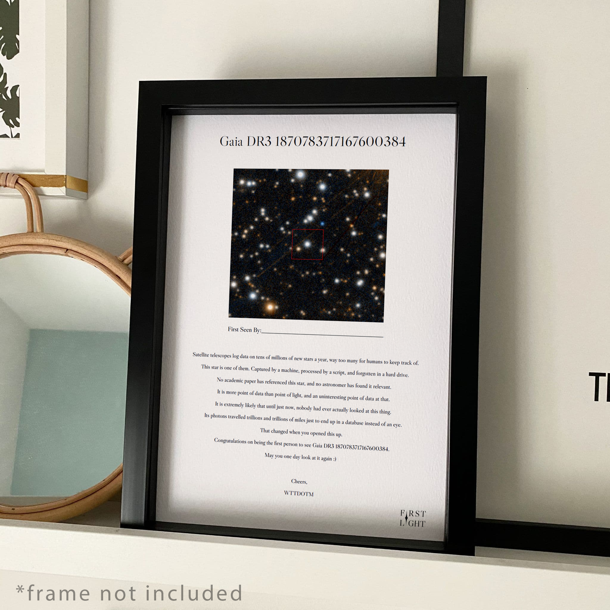
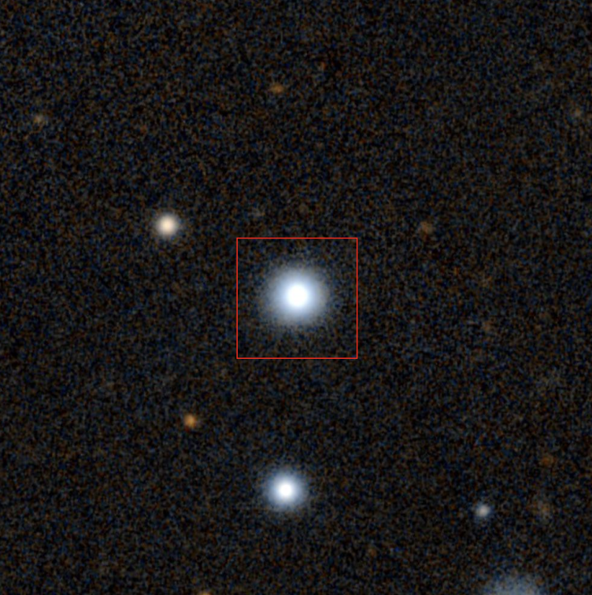

Most stars that we discover are never actually seen.
First Light
 



First Light is more than just a gift—it's an experience. We let you pick a real, newly discovered star and then give you an actual visual representation of it. Our advanced telescopic imagery and star cataloging system ensure that the star you name is truly unique.
Inside the package, you'll find historical facts, cosmic data, and a beautifully rendered image captured by our partnership with leading observatories. Every star tells a story—this time, it's yours.
Frequently Asked Questions
We work with recognized celestial databases to ensure that when you adopt a star, it’s newly discovered and exclusively yours to name.
No. We provide a high-resolution image. However, you can use any telescope and our coordinate guide to locate it in the sky if you like.
We partner with observatories and keep star coordinates in a publicly accessible database, but naming rights here are a commemorative gesture, not an official IAU designation.